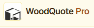
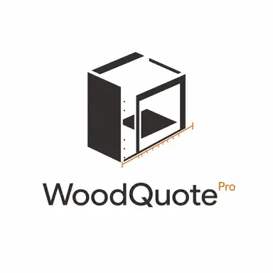

Menos contas espalhadas.
Conecte as informações do projeto e das peças para organizar a preparação da produção.

Experimentar grátisTECNOLOGIA PARA QUEM FAZ MÓVEIS
Projete móveis em 3D, organize as peças e planeje o corte em um fluxo conectado. Leve sua próxima ideia para a oficina com mais clareza em cada etapa.
Feito para marcenarias. Pensado para a produção.
Ilustração conceitual · não é uma captura do software
Projeto 3D → Peças → Plano de corte → Produção
SUA ROTINA PODE SER DIFERENTE
Quem vive de marcenaria sabe: uma decisão no projeto acompanha a peça até a montagem.
Conecte as informações do projeto e das peças para organizar a preparação da produção.
A visualização em 3D ajuda a apresentar a ideia e conversar sobre o móvel antes de levá-lo à oficina.
Leve o planejamento de corte para dentro do fluxo, com uma visão das peças que compõem o projeto.
UM FLUXO. DO COMEÇO AO FIM.
Conheça o caminho do projeto à produção. Selecione uma etapa e veja como o WoodQuote Pro acompanha seu trabalho.
Visualize o móvel em 3D para desenvolver a ideia e apresentar o projeto com mais clareza.
Do primeiro desenho à preparação para produzir.MAIS CONTINUIDADE NA SUA ROTINA
Uma plataforma conectada faz sentido quando ajuda a levar o que foi planejado para a próxima etapa do trabalho.
Escolha o plano que acompanha o ritmo da sua produção.
SEU PRÓXIMO PROJETO COMEÇA AQUI
Experimente o WoodQuote Pro e conheça os planos no site oficial. Seu próximo projeto começa com uma escolha mais organizada.
Experimentar no site oficialConfira os recursos, a duração do teste e as condições de assinatura antes de começar.

ANTES DO PRIMEIRO PROJETO
Para quem projeta e produz móveis: marceneiros autônomos, marcenarias e empresas de móveis planejados que querem conectar o projeto à produção.
No site principal do WoodQuote Pro. Esta página apresenta a solução e direciona você para lá.
Você encontra a duração do teste, os recursos incluídos e as condições de cobrança e cancelamento no site oficial, antes de se cadastrar.
Compare os planos no site oficial e escolha os recursos adequados à sua rotina. Para produção CNC, confira também a compatibilidade dos arquivos com sua máquina.